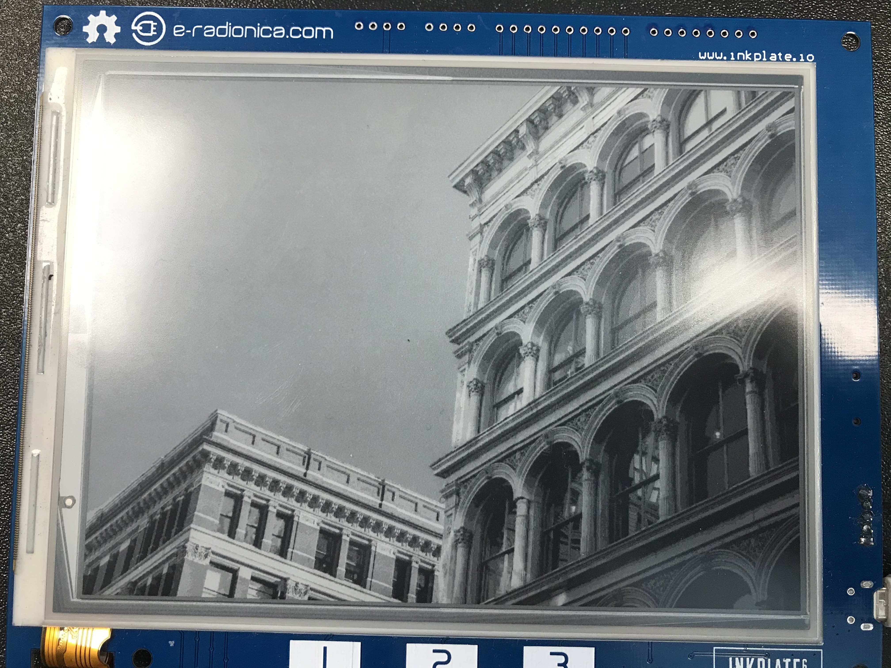
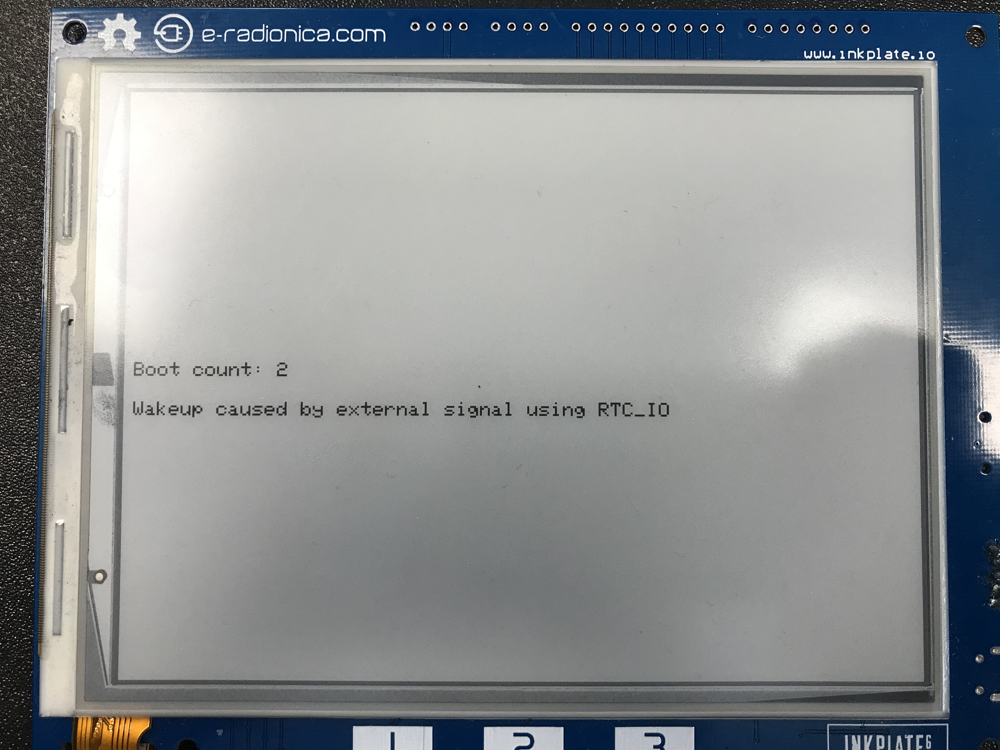
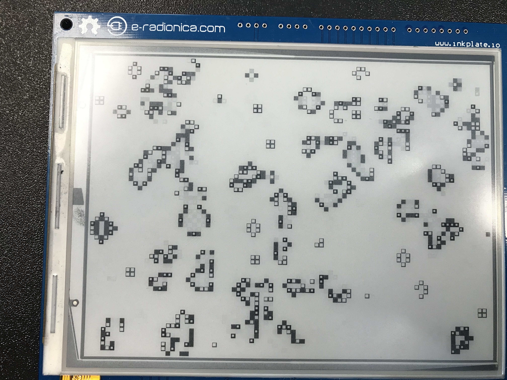
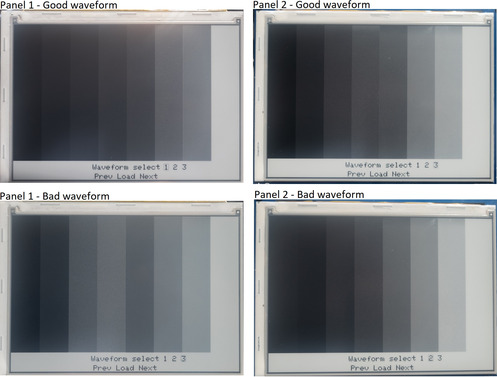
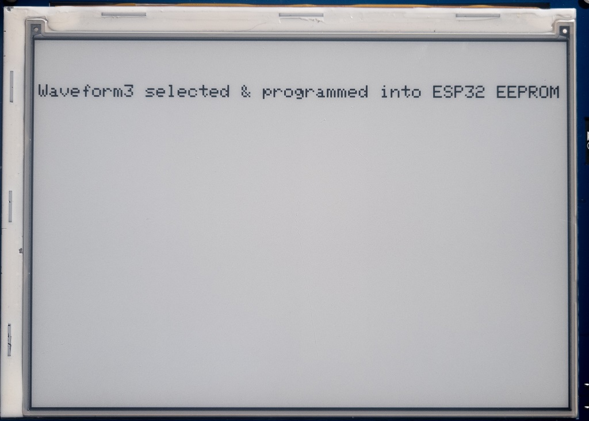

4. Examples
All examples included in our library can be found here: Examples for Inkplate After you download inkplate Arduino library you will have all examples inside Arduino IDE. There are comments in all examples that describe how it works and what hardware you need.
4.1. Basic Inkplate Functionality
4.1.1. Inkplate_Basic_BW
This example shows basic Inkplate functionalities in black and white mode (writing text, drawing shapes and images).
4.1.2. Inkplate_Basic_Gray
This example shows basic Inkplate functionalities in gray mode (writing text, drawing shapes and images).
4.1.3. Inkplate_Basic_Partial_Update
This example shows how to properly use partial update on Inkplate.

4.1.4. Inkplate_Full_Screen_Colors
Simple Inkplate example showing all colors of the Inkplate..
4.1.5. Inkplate_6Color_Basic
Simple Inkplate example showing drawing functionalities of the Inkplate 6COLOR library.
4.1.6. Inkplate_Basic_BWR
This example shows basic Inkplate functionalities in red, black and white mode (writing text, drawing shapes and images) on Inkplate 2.
4.1.7. Inkplate_Basic_Text_With_Shadow
This example shows drawing text with shadow, you can change text color and shadow color.
4.2. Advanced Inkplate Features
4.2.1. Inkplate_Bluetooth_Peripheral_Mode_Example
This example shows how to use Inkplate as a peripheral device over Bluetooth. Note: for this to work you need to use ESP32 Wroover Board definition, as ours currently has a bug :(
4.2.2. Inkplate_Battery_Voltage_Temperature
For this example you will need a Lithium battery (3.6V) with two pin JST connector. This example will show you how to read voltage of the battery and read temperature from on-board temperature sensor which is part of TPS65186 e-paper PMIC. NOTE: In order to read temperature, e-paper has to be refreshed at least one time

4.2.3. Inkplate_EasyC
For this example you will need a micro USB cable, Inkplate, BME680 sensor with easyC connector on it. This example will show you how you can read temperature, humidity, air pressure and gas data from BME680.

4.2.4. Inkplate_Low_Power
For this example you will need USB cable and Inkplate. This example will show you how you can use low power functionality of Inkplate board. In deep sleep, whole board will consume about 25uA from battery. Inkplate will wake every 20 seconds change content on screen.

{kind=link}
4.2.5. Inkplate_MCP23017_Expander
For this example you will need only a micro USB cable, Inkplate, 330 Ohm resistor and LED diode. This example will show you how you can manipulate with I/Os of MCP23017 Expander. You can only manipulate with Port B of MCP23017 (GPB1-GPB7). Port A is used for epaper panel and TPS65186 PMIC. GPB0 is used for ESP32 GPIO0 so you can’t use it either.

4.2.6. Inkplate_Partial_Update_With_Deep_Sleep
In this example we will show how to use partial update of epaper screen with deep sleep functionality of ESP32.

4.2.7. Inkplate_SD_Pictures
For this example you will need a micro USB cable, Inkplate and a SD card loaded with image1.bmp and image2.bmp file that can be found inside folder of this example. This example will show you how you can read .bmp and .jpeg files (pictures) from SD card and display that image on e-paper display.
4.2.8. Inkplate_SD_TXT_File
For this example you will need only a micro USB cable, Inkplate and a SD card loaded with text.txt file that can be found inside folder of this example. This example will show you how to open .txt files and display the content of that file on Inkplate epaper display.
4.2.9. Inkplate_Touchpads
For this example you will need only a micro USB cable and Inkplate. This example will show you how you can use built-in touchpads (on PCB marked with numbers 1, 2 and 3). They are basically touch sensitive switches.

4.2.10. Inkplate_Wake_Up_On_Touchpads
This example will shown how to use MCP and ESP interrupts to wake up the MCU from deepsleep when touchpad is pressed.

{kind=link}
4.2.11. Web_Pictures
For this example you will need a micro USB cable, Inkplate, and an available WiFi connection. This example will show you how you can download a .bmp file (picture) from the web and display that image on e-paper display.

4.2.12. Inkplate_Web_Server
For this example you will need a micro USB cable, Inkplate and a device with WiFi and Internet brower (PC, Laptop, Smartphone etc). This example will show you how you can use Inkplate as a small and simple standlone Web Server. You need to connect to Inkplate with WiFi and open IP address shown on Inkplate display.

4.2.13. Inkplate_WiFi_HTTP_Request
For this example you will need USB cable, Inkplate and stable WiFi Internet connection. This example will show you how to connect to WiFi network, get data from Internet and display that data on epaper. This example is NOT on to how to parse HTML data from Internet - it will just print HTML on the screen.

4.3. Community contributions
4.3.1. Game_Of_Life_By_Claud9999
To run it, jut upload the code and watch Conways game of life animation!

{kind=link}
4.4. Others
4.4.1. Inkplate_Clean
This example will try to remove heavy burn-in visible on the panel. Set number of refresh / clear cycles and upload the program.
4.4.2. Inkplate_Factory_Programming_VCOM
This example should not be used if you dont know what VCOM is and what exactly you are doing as it can damage panel.
4.4.3. Inkplate_Mandelbrot_Set
This example renders the mandelbrot set to coordiantes to Inkplate. Due to the nature of Mandelbrot set, it is quite slow on low powered MCUs, so please be patient.

4.4.4. Inkplate_Maze_Generator
This example renders a random maze every time. You can write on it with a whiteboard marker or a graphite pen to solve it, just be sure not to use pernament markers.

4.4.5. Inkplate_Peripheral_Mode
Using this sketch, you don’t have to program and control e-paper using Arduino code. Instead, you can send UART command. This give you flexibility that you can use this Inkplate on any platform.
4.4.6. Inkplate_VariPass_Graphs
This example will show you how you can use the API on the VariPass website to download and display a sensor graph on the e-paper display.

4.4.7. Mapbox_Api
This example will show you how you can use Inkplate 6COLOR to display map data. This example gets html data from crowdsource campaing and displays them on Inkplate screen.
4.4.8. Gallery
This example will show you how you can use Inkplate 6COLOR to random images in the root sdcard folder.
4.4.9. Waveform EEPROM Programming
NOTE: This example is only available on Inkplate 10 board.
In order for the image to display correctly on Inkplate, Inkplate needs to have a proper waveform saved in the EEPROM memory. If there is no waveform data available, the message “Waveform load failed! Upload new waveform in EEPROM. Using default waveform.” on the Serial monitor will be displayed (if the Serial.begin() is called before display.begin()). If something like this happens, or you’re not satisfied with the grayscale, you can run this example and choose one of three available waveforms.
Waveforms are responsible for the grayscale image on the e-paper display. It’s just a series of frames that darken or whiten pixels in each frame in order to get desired pixel color. They depend on many parameters like temperature, previous pixel color, next pixel color, and even the type (batch) of the e-paper panel.
Upload this example code on your Inkplate 10. After upload, with touchpad 1 and touchpad 3 choose one of the available waveforms. In the next images, you can see what the correct waveform will look like on the Inkplate. After you find the waveform that best suits for your panel, press touchpad 2 to store it in the EEPROM memory of the ESP32. Calling display.begin() function, the waveform will be copied from EEPROM memory into the library. There is no need for waveform selection before every usage of the Inkplate. One waveform on one Inkplate may not be compatible with another Inkplate (as you can also see in the pictures, there are two different panels, each with its own waveform).
After successfully saving waveform data to EEPROM, it shows the next image.
Waveforms on the Inkplate are reverse engineered and made to best fit a large number of e-paper panels, but they are not perfect.
{kind=link}
{kind=link}
4.5. Projects
4.5.1. Campaing_Tracker
This example will show you how you can use Inkplate to display html data. It gets html data from crowdsource campaing and displays them on Inkplate screen.

4.5.2. Clock_Example
This example contains three types of clocks. First type is digital clock with 4 digits which displays hours and minutes. Second type is binary clock, which also have digits but displayed in binary numbers. Third type is analog clock with hands.
4.5.3. Cryptocurrency_Tracker
This example will show you how you can use Inkplate to display API data. Here we use Coingecko API to get last 90 days prices and display them on the Inkplate screen.

4.5.4. Daily_Weather_Station
This example will show you how you can use Inkplate to display API data, e.g. Metaweather public weather API.

4.5.5. Google_Calendar
This project shows you how Inkplate can be used to display events in your Google Calendar using their provided API.

4.5.6. Hourly_Weather_Station
This example will show you how you can use Inkplate to display API data, e.g. Metaweather public weather API, and weatherstack for real time data.

4.5.7. Image_Frame
This example shows how you can set inkplate to show random pictures from web.
4.5.8. Open_weather_station
This example will show you how you can use Inkplate to display API data, e.g. Metaweather public weather API.

4.5.9. Quotables_Example
This example shows you how to use simple API call without API key. Response from server is in JSON format, so that will be shown too how it is used. What happens here is basically ESP32 sends API call and server returns HTML document containing one random quote and some information about it, then using library ArduinoJSON we extract only quote from JSON data and show it only on Inkplate 2.
4.5.10. World_Clock_Example
This example uses API call to get tim for wanted city and it’s timezone. Fetched data is in JSON format, and library is used to extract data. To choose city just type any part of city’s name and it will be automatically found, but if you type to few letters, any city containig that letters will be found. Only for Inkplate 2.
4.5.11. Youtube_Subscriber_Count_Example
This example show how to use Google API to show info about some youtube chhannel. You need to register on https://developers.google.com/ and get API key of any kind so you, can use yxour API key in API call. That key you should copy in variable api_key. Second thing you need to get ID of any youtube channel and copy it in channel_id variable. You can get ID by going on any youtube channel profile and copy part of URL link after https://www.youtube.com/channel/ (so just some random text after last backslash). Only for Inkplate 2.